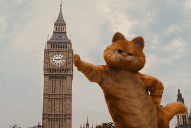

Гарфилд из фильма

Гарфилд
- толстый, ленивый кот, который живёт со своим хозяином Джоном Арбаклом
Его основное занятие — писать скрипты на Python подшучивание (а какого-то рода даже издевательство)
над хозяином и соседским доберманом Лукой.
Помимо Джона, Гарфилд поддерживает странную дружбу с мышью по имени Луис.
Он также дружит с котом Нермалом, которого часто запускает в корзине к крышам домов, и с кошкой Арлин.